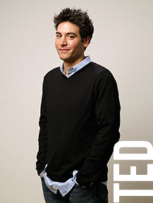
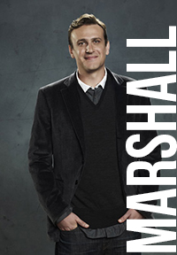
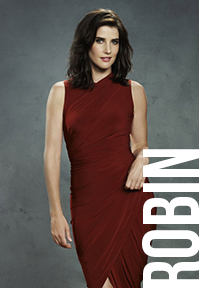
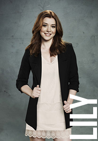
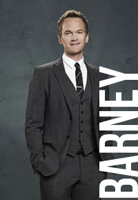
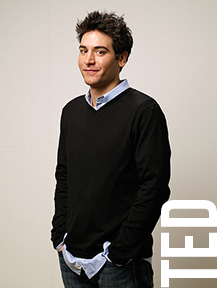
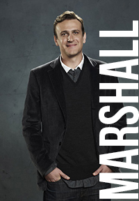
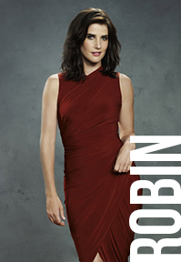
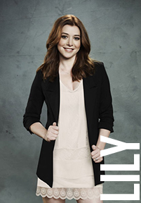
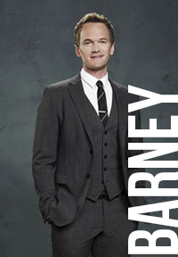

Characters
 









Ted Mosby
Josh Radnor as Ted Mosby, an architect, college professor and the central character of the series. He is the main protagonist where he tells the story of his adult years from his late twenties to his early thirties and about all his obstacles he has to endure before he meets "The One" aka the Mother. This story is told by the Older Ted Mosby, and narrator of the series, Bob Saget. Ted moved to New York City with his friends Marshall and Lily after graduating from Wesleyan University. In New York, he met Barney at the urinal of MacLaren's and Robin, to whom he was immediately attracted. Ted is on a quest for happiness and "The One", the woman he will marry. Ted prefers more elegant and high-class interests than his friends have. He goes to great lengths to profess his love to the women in his life, but they all falter eventually. Despite these qualities, Ted often acts immaturely, such as partaking in wild activities with Barney. In the show’s finale, he says, that, in Tracy, he had met the love of his life (the titular Mother), but only after he was finished telling the story he realized that Robin was the love of his life.
Ted's character is based largely on the show's creator, Carter Bays, with the friendship between him and fellow creator Craig Thomas being the base for the friendship between Ted and Marshall. His personality is also partially based on Ross Geller from the NBC sitcom Friends, including Ted's original profession as an archaeologist being similar to Ross' profession as a paleontologist. His profession was later changed to be an architect, due to the writers having difficulties fitting his profession as an archaeologist in a New York setting.
Ted is prone to questionable romantic gestures; in the pilot episode, for example, he steals a blue French horn (nicknamed "The Smurf Penis") that was a topic of conversation in his first date with Robin, and then scares Robin off by telling her he is in love with her. In a similar vein, he dresses up as a "hanging chad" every year for Halloween, in the hopes of meeting "The Slutty Pumpkin," a woman dressed as a jack-o'-lantern (complete with strategically placed holes) whom he once met at a Halloween party. (When he finally meets the woman, however, he discovers that they have no romantic chemistry whatsoever.)
Ted describes himself as "half-Jewish". He is seen cheering for the Cleveland Indians when they play the New York Yankees at a baseball game. He and Marshall were randomly assigned as freshman year roommates at Wesleyan, and became best friends on a long, ill-fated road trip.
In several episodes, Ted claims to have been "vomit-free since '93", although it is untrue. Ted knows French and sign language, and has an annoying habit of correcting everything that people around him say. As a child, he had a detective club called "The Mosby Boys", which consisted of him and his sister, Heather. Ted also speaks and reads Spanish, albeit clumsily. Pablo Neruda is one of his favorite writers. He also has a fondness for high culture such as classical literature and philosophy, and has a tendency to become boring and pretentious when discussing it.
Marshall Erikson
Jason Segel as Marshall Eriksen, Ted's best friend. In season 2 Marshall marries Lily, with whom he has been in love since his freshman year of college; they have a child during season 7. Marshall was born in St. Cloud, Minnesota. He has an interest in paranormal phenomenon, and mythical creatures, particularly Sasquatch. His dream to be an environmental lawyer conflicts with his immediate need for money, such as for his wedding and to raise his children.
The series revolves around the adventures of the five main characters: Ted Mosby (Josh Radnor) and his best friends Marshall, his wife Lily Aldrin (Alyson Hannigan), Barney Stinson (Neil Patrick Harris) and Robin Scherbatsky (Cobie Smulders). Marshall met Ted and Lily during their freshman year at Wesleyan University in 1996, and they moved into an apartment in New York City together after graduation. In the show's pilot episode, he proposes to Lily, inspiring Ted to start looking for the love of his life.
Marshall was born and raised in St. Cloud, Minnesota, the youngest of three brothers. His last name, and the fact that he is from Minnesota suggests that he might be a Danish American or Norwegian American. He is extremely close to his family, particularly his father, Marvin (Bill Fagerbakke). When Marvin dies Marshall is devastated, and takes a long time to recover, not to mention that during the episode, Last Words he struggles with remembering what Marvin's last words were to him. He is also close to his mother, Judy (Suzie Plakson), and is oblivious to the fact that she and Lily despise each other.
Very few references have been made to identify Marshall's birthday. We can assume he was in the same school year as best friend and roommate Ted Mosby and then-girlfriend Lily Aldrin and In "The Yips" Marshall says he is 29. This episode aired in November 2007. This confirms Marshall's birth year to be either 1978 or 1977. Ted is turning 30 on April 25, 2008 in "The Goat". The dialogue in this episode implies that Lily, Marshall and Robin have not yet reached this milestone. We can only conclude Marshall's birthday is between April 25 - late August/ early September 1978.
As a teenager, he got into brutal fighting matches with his brothers. He is a huge fan of the Minnesota Vikings. Marshall received his B.A from Wesleyan University and Juris Doctor (J.D) from Columbia University Law School.
In the first two seasons, Marshall is studying at law school with dreams of working as an environmental lawyer for Natural Resource Defense Council (NRDC). Once he passes the bar, however, money concerns force him to take a job in the legal department of Goliath National Bank, a corrupt multinational corporation. He quits his job in the seventh season and finally achieves his dream of working for the NRDC. In the last episode of the eighth season, he applies to become a judge, deciding that this is where he will be able to make the most impact. Later on, he is offered a recently vacated seat, and accepts without telling Lily; staying in New York conflicts with her dream job in Italy. He gives the position up in the ninth season, however, so he can go to Rome with Lily and their children.[9] The series finale, "Last Forever", reveals that he worked for another corporate firm after returning to New York, until another judge's seat opened up for him. In the year 2020, he is elected to the New York State Supreme Court. He died in 2044.
Marshall is fascinated by the paranormal, and has absolute faith that mythical creatures such as Sasquatch and the Loch Ness Monster are real. He has even discovered a paranormal event himself: a bizarre creature he names "the cockamouse".
Robin Scherbatsky
Cobie Smulders as Robin Scherbatsky, a news anchor who has on-again off-again relationships with both Ted and Barney. Robin emigrated from Canada to take a job in a news station and met Ted at MacLaren's; her Canadian background is a source of many jokes from her friends. She is shown to be very career-centric and rejects traditional roles, such as getting married and having kids. Robin often drinks scotch and smokes cigars, and she is an avid gun fan. She and Barney get engaged and later marry in the first part of the series finale, but divorce in the second part, three years later. Cobie's husband Taran Kilam has also appeared on 6 episodes of the show as Gary Blauman.
After moving to New York City in April 2005, Robin became a news anchor for a New York cable news channel, Metro News 1, and later became a host of her own early-morning talk show.
Robin lives in the Park Slope area of Brooklyn. In September 2005 she meets Ted Mosby, the show's main character, and they are immediately attracted to each other. They go on a date in which Ted steals a blue French Horn for her, but Ted spoils his chances with her by impulsively saying he is in love with her. They resolve to be friends, but their relationship is complicated by lingering romantic feelings. Robin is reluctant to date Ted because he wants to get married and settle down, but they become a couple anyway at the end of season one. They break up at the end of season two after realizing that they want different things. While it is difficult at first to remain in each other's lives, they eventually become close, trusted friends. At the end of the fifth season, she moves back in to Ted's apartment after her boyfriend Don (Benjamin Koldyke) breaks up with her and moves to Chicago.
Although she is a reporter for "fluff news pieces" at the end of news segments at the time of first meeting Ted, over the series she works her way up to be lead news anchor at Metro News 1. She briefly takes a prominent anchoring position in Japan, only to return to New York and, with help from Barney, host her own talk show.
Robin is also an avid gun enthusiast, shown in multiple episodes brandishing a Desert Eagle, as well as having a subscription to Guns and Ammo.
She has dual citizenship in Canada and the United States.
When an old boyfriend humiliates her, Barney comforts her, and they have sex. This initially causes friction between her and Ted, but he ultimately accepts it. Barney and Robin have what they believe is a no-strings-attached sexual relationship for a few months, but they become an official couple after some aggressive prodding from Lily. They soon realize that they don't work as a couple, however, and break up. They remain friends, but it is implied Robin never truly lets Barney go. Despite spending most of "Challenge Accepted" plotting with Barney to find a way to prevent Ted from pursuing a meaningless relationship and rekindling her relationship with him in the process, she also pressures Barney into approaching Nora (Nazanin Boniadi), a woman he likes. However, when Barney asks Nora for a cup of coffee, Robin realizes she may still have feelings for him.
In the season 7 premiere episode "The Best Man", Lily confronts Robin about her feelings for Barney, and advises her to tell him. She is about to do so when Barney pulls her onto the dance floor at a wedding. Whatever tension there is between them is broken when Barney receives a call from Nora. Barney isn't sure what to say to Nora and asks for Robin's help; Robin feeds Barney the words that she had intended to say to him, which he uses to convince Nora to meet him again. In "The Stinson Missile Crisis", Robin assaults a woman setting out to destroy Barney's relationship with Nora and is sent to court-mandated therapy with a therapist named Kevin (Kal Penn). They start dating shortly after. Their relationship is tested when Robin cheats on him with Barney, and she decides to break up with Kevin. She changes her mind when Kevin tells her how much he cares for her, and they stay together. After Kevin proposes to her, Robin thinks she is ready to settle down, but he ultimately takes back his proposal when she says that she is unable and unwilling to have children.
In the seventh season, Robin discovers that she is unable to have children. Although she had always believed she did not want to have children, she is devastated by the knowledge that she no longer has the option. She lies to the gang about why she is depressed, saying that she has just found out she can't be an Olympic pole-vaulter. Ted senses that something more serious is going on, however, and surprises her by putting up Christmas decorations in her apartment and comforting her as she cries.
In the episode "Tailgate", Robin is put in charge of a New Year's Countdown show on her news station. The host, Sandy Rivers (Alexis Denisof), gets drunk live on the show and Robin is forced to replace him. Just before midnight, she says, "When that ball drops, we all get a fresh start, and, I don't know about you, but I could really use one." In the season finale, it is revealed that she will be the bride at Barney's wedding.
Her romantic feelings for Barney resurface in the eighth season when he begins dating Patrice (Ellen D. Williams), a cheerful coworker for whom she has an irrational hatred. When Barney announces that he is going to propose to Patrice, Robin is heartbroken. However, in "The Final Page", Barney reveals that his courtship with Patrice was an elaborate ruse designed to get Robin back; he then proposes. Robin accepts.
The final season of the show depicts the 56 hours before her wedding to Barney. On her wedding day, she gets cold feet when she learns that Ted went to great lengths to find a locket she had buried years before; she takes it as a "sign from the universe" that she should be with Ted. Wanting her to be happy, Ted tells her that he no longer loves her in that way. She goes through with the wedding after Barney vows to always be honest with her.
The series finale, "Last Forever", reveals that Robin and Barney divorced after three years because her hectic travel schedule prevents them from spending any time together. Robin leaves the group upon realizing that she can't bear to be around Barney, who has resumed his womanizing lifestyle, or Ted, who is now happily married to Tracy McConnell (Cristin Milioti). She and the gang drift apart over the ensuing years, but she is there for Ted and Tracy's wedding, where she makes her peace with Barney, who has recently had a daughter and is pleased to see that fatherhood has made him a better man.
By 2030, Robin is a very successful television news anchor and lives with her dogs in New York. The last scene of the show depicts Robin looking outside her window to see Ted, who is now a widower and wants another chance with her, holding out the blue French horn from their first date. She smiles at him with tears in her eyes.
Barney Stinson
Neil Patrick Harris as Barney Stinson is a serial playboy, using his relative wealth and an array of outrageous strategies to seduce women with no intention of engaging in a relationship. His catchphrases include 'Suit Up' and 'Legend-wait-for-it-Dary'. He is Ted's "bro," often jealous of Marshall for having known Ted since college. Abandoned by his father at a young age, Barney has abandonment issues and clings to his friends. He marries Robin in the series finale but they divorce after three years. In 2020, a failed one-night stand gives him a daughter, Ellie. Neil's husband David Burtka has appeared on 7 episodes on the show as Scooter.
Barney Stinson is one of five main characters on How I Met Your Mother. He is a manipulative, oversexed businessman in his thirties who always wears a suit, likes women with "daddy issues" and is frequently willing to offer his (sometimes hypocritical) opinion. Throughout the earlier seasons, Barney is a huge womanizer, and has been described as a "high-functioning sociopath" by his best friend, Ted Mosby (Josh Radnor). Barney has a plethora of strategies and rules designed to meet women, sleep with them, and discard them. Through several seasons of the show, four (4) of the main characters are couples, as Ted began dating Robin Scherbatsky (Cobie Smulders) and Ted's roommate Marshall Eriksen (Jason Segel) becomes engaged and later married to Lily Aldrin (Alyson Hannigan). This leaves Barney the only single character, and, according to Harris, Barney is "resentful" that the other characters have paired up. Later on, in season 5, he dates Robin. They end up breaking up not long after, once they both realize they are making one another miserable.
Harris describes Barney as a man who "likes to create crazy situations and then sit back and watch it all go down." He is an opportunist who manipulates any situation so that it goes his way. He is also highly competitive, and will take on "challenges" to complete outlandish tasks in order to prove his worth. He is proud and stubborn, and attempts to stand by his word no matter what. In "I Heart NJ", for example, he refuses to put down his fist unless someone offers him a fist bump. By the end of the episode, he has the same fist elevated in a sling after struggling to keep his fist up throughout the episode. In "Lucky Penny", when the others do not believe that he can run the New York City Marathon the next day without training, Barney immediately agrees to do so. Although he succeeds, he is unable to walk afterwards. Although he thinks of himself as worldly, Barney is sometimes extremely naive, believing many lies his mother told him well into adulthood, such as believing that Bob Barker is his father.
Barney, like Harris himself, is an illusionist. His favorite types of magic tricks involve fire, as seen in the tenth episode of the second season, "Single Stamina" and in the fourth episode of the fourth season, "Intervention". Barney uses magic tricks mostly to pick up women. His most common method of picking up women is telling them elaborate lies about himself, often using an alias. Many of his schemes for picking up women are in a book he has written called "The Playbook", which is exposed in the episode "The Playbook". He has commitment issues, as evidenced in his reluctance to put a label on his relationship with Robin and the fact that she is one of the few women he has actually dated since the show started.
Barney is very well-connected and is the most affluent member of the group. He frequently buys expensive items—such as a last-minute plane ticket to San Francisco, thousands of dollars in postage stamps, or two televisions specifically for smashing in frustration—in the spur of the moment. He is also something of a metrosexual; he waxes his chest, enjoys manicures and has an extensive knowledge of designer labels and gourmet food. However, he is also seen to have a gambling problem that he occasionally gets under control, only to relapse as seen in several episodes such as "Atlantic City", where he has gambling buddies in the Chinese Triad, and "Monday Night Football".
Although The Early Show described him as "Utterly devoid of morality", Barney lives by the "Bro Code", his own code of ethics. Despite his overall questionable character, according to creator Craig Thomas, Barney is "a pretty fragile character who's really afraid of being alone. He just wants people to like him, to be important to people, and to have disciples who follow his word." He has displayed a softer, kinder side on several occasions, however, such as preventing Marshall from sleeping with other women when he and Lily break up, and persuading Lily to come back to Marshall.
In "The Slutty Pumpkin Returns", Barney finds out he is one quarter Canadian, much to his horror and embarrassment.
Throughout the series, one major character development is apparent in Barney: At the beginning of the show, his character is a womanizer who completely objectifies sex and women and wants nothing to do with dating and relationships. Although he does date Robin in Season 5, he resumes his promiscuous lifestyle immediately after they break up. In Seasons 6 and 7, however, he begins to confront his personal issues, like his relationship with his estranged father and his fear of commitment. By the time late Season 7 rolls around, Barney has finally "grown up," and has now warmed to the idea of a commitment and marriage, culminating in his proposal to his girlfriend, Quinn. Although he briefly retreats to his escapades after he and Quinn break up, he does make one major final leap in his maturity when he burns The Playbook and proposes to Robin in Season 8's two-part episode "The Final Page," after finally admitting to himself that he is still in love with her. Robin accepts and they plan their wedding in the second half of the season.
The final season revolves around Barney and Robin's wedding weekend. After some apprehension on both their parts, they get married in "The End of the Aisle" after he vows to always be honest with her. The series finale, "Last Forever", reveals that, three years after their wedding, they get divorced because Robin's hectic travel schedule prevents them from spending any time together. Barney returns to a lifestyle of meaningless sex with multiple women for several years afterward, until he gets one of his one-night stands pregnant. He hates the idea of being a father until the day his child – a girl named Ellie – is born. He falls in love with her at first sight and becomes a devoted father, turning away from his player lifestyle for good.
Lily Aldrin
Alyson Hannigan as Lily Aldrin, a kindergarten teacher, aspiring artist, and Marshall's wife. She is terrible at keeping secrets, and can be manipulative at times. She marries Marshall in season 2 and gives birth to Marvin in season 7. Though appearing sweet and cute, Lily can be quite unexpectedly fierce. Alyson's husband Alexis Denisof has appeared on 10 episodes on the show as Sandy Rivers.
Lily Aldrin, born March 22, 1978, grew up in Park Slope, Brooklyn, New York. She is the daughter of Janice Aldrin, whom Lily describes as a feminist and who worked two jobs to support the family. The creators stated in commentary that there is no evidence to the contrary that Lily's grandfather is astronaut Buzz Aldrin – and like Buzz Aldrin, her grandfather is said to have fought in the Korean War. Lily's father, Mickey, is an unsuccessful board game creator living in his parents' basement. Janice and Mickey divorced when Lily was a child. Lily is estranged from her father – an absentee parent who she claims "broke my heart every day for 20 years" – until he promises to be there for her following the birth of her son.
During her high school and college years, she was a part of the goth subculture, dying her hair and wearing stereotypical "goth" clothes. She dumped her high school boyfriend, Scooter, on prom night, admitting she only dated him because he looked like Kurt Cobain. He remains obsessed with her for years afterward. She met Marshall during her freshman year at Wesleyan University in 1996 and dated him throughout college.
As of 2010, Lily is 32 years old, meaning she was born circa 1978. According to her résumé, she is fluent in Italian, certified in teaching English as a Second Language, and proficient in Photoshop, Quark, and Java.
Lily frequently states her need for regular sex, saying that if she went without for too long she'd be "out there selling it for a nickel". She has a more than passing sexual interest in other women, suggesting she may be bisexual. In particular, she has confessed several times, albeit in a seemingly joking fashion, that she finds Robin sexually attractive, and has been the subject of some sexually "confusing dreams". Robin at one point says that she won't go near Lily after she's been drinking martinis, as she is prone to flirt quite strongly with her and even try to get the guys to dare them to make out. Well aware of Lily's sexual attraction to her, Robin tends to alternate between ignoring, and being disturbed by them whenever they show themselves.
Lily is adept at manipulating people and situations to get what she wants; she is especially talented at engineering breakups between couples she knows are not right for each other. Barney calls her a "diabolical puppet master" and "pure evil", while Ted calls her a "psychopath".
Tracy McConnell
Cristin Milioti as Tracy McConnell, the future wife of Ted Mosby, The Mother. Tracy McConnell is first seen in the finale of season 8, though her name is hinted at season 1 (01x09 "Belly full of Turkey") and officially revealed in the series finale. Ted falls madly in love with her, but in 2024 she passes away.
The Mother was born on September 19, 1984.
The Mother, joined by her roommate Kelly awaits the arrival of her boyfriend Max only to receive a call informing her of his death. After the funeral service, she returns to the apartment to open Max's last gift to her — a ukulele. The Mother spends the next few years grieving the passing of the man she believes was her one true love.
In "Wait for It", it is revealed that the short story of how they met involved her yellow umbrella. In "No Tomorrow", Ted finds the umbrella at a club and takes it home after attending a St. Patrick's Day party which she also attended, as it had been two and a half years since the death of Max, her late boyfriend. She is still grieving, but her roommate Kelly encourages her to go out and date again, bringing her to the same bar where Ted and Barney are celebrating. The two women run into Mitch, her old orchestra instructor; The Mother offers to give Mitch her cello for his work at a school and they head to her apartment. After they start talking, Mitch encourages her to pursue her dreams. The Mother expresses her desire to end poverty by taking up economics in college.
On his first day of teaching as Professor Mosby, as seen in the season 4 finale "The Leap", he is seen in front of the classroom of students, one of which Future Ted says is the titular mother. But in the first episode of season 5, "Definitions", it is revealed that he was actually in the wrong classroom — Economics instead of Architecture. At the same time in "How Your Mother Met Me", the Mother sits her first session in Economics 305 and meets another graduate student named Cindy (Rachel Bilson), whom she offers to move in with her as her roommate. They see Ted enter the room, but when he announces the subject, The Mother thinks she is in the wrong room and runs off. She heads back to the room after seeing Ted scramble to his actual classroom.
Later, in "Girls Versus Suits", Ted dates Cindy, not knowing that her roommate is his future wife. Throughout the episode, Ted notes that Cindy had spent most of their first date talking jealously about her roommate. When in Cindy and the mother's apartment he picks up many of The Mother's belongings, attempting to show how compatible he and Cindy are (thinking the items are Cindy's) and glimpses the mother's foot as she disappears into her room after taking a shower. Ted finds out at this time that she plays bass guitar in a band. Ted forgets to take the yellow umbrella with him when he goes out and Future Ted mentions, "this is how your mother got her yellow umbrella back." In "How Your Mother Met Me", it is revealed that, after Ted left the apartment, the Mother had discovered the umbrella and, upon going to question Cindy, finds her in a state. As she tried to console her, Cindy said that she was a much better match for Ted, and began to lovingly list all of the reasons that Ted would find the mother attractive, before spontaneously kissing her, revealing that her jealousy towards her roommate was actually a crush. While this incident made Cindy realise that she is a lesbian, it also made the Mother decide to go back into dating, as the kiss was her first in a long time.
Some time after this, a man named Darren approaches The Mother and is welcomed into her band named Superfreakonomics. Darren gradually takes over the band.
In the season 6 opener "Big Days" it is revealed Ted meets his future wife "the day of" the wedding at which he is the best man. In the episode "False Positive" Robin asks Ted to be her future best man, should she ever get married. In the episode "Challenge Accepted", it is revealed that Ted meets the mother of his children the day of Barney's wedding. In the last episode of season 7, "The Magician's Code" it is shown that Barney will marry Robin, and Ted will meet the mother "the day of" their wedding. On the premiere of season 8, Ted's wife appears after Barney and Robin's wedding, outside at the "Farhampton" station while holding a yellow umbrella and her bass guitar.
In the season 8 episode "Band or DJ?," Ted runs into Cindy on the subway and tells her that the band Barney and Robin hired to play at their wedding cancelled at the last minute. The end result of the encounter is that Cindy's (now ex-) roommate's band plays at Barney and Robin's wedding.
The Mother is first shown meeting Louis in "How Your Mother Met Me" as she is left to carry the band equipment while the now-lead band member Darren talks to his fans. Later at MacLaren's Pub, she tells him she's not yet ready to date. Louis asks her to give him a call if she changes her mind and they begin dating not long after.
The Mother meets all of Ted's best friends (Barney, Lily, Marshall and Robin) before she meets him. The Mother is responsible for convincing Barney to pursue Robin, as revealed through a flashback in "Platonish". In "The Locket", Tracy meets Lily on a train journey.
In "Bass Player Wanted", the Mother picks up a hitchhiking Marshall, carrying his son Marvin, on her way to Farhampton Inn. On their way, it is revealed that the Mother is a bass player in the band, that is scheduled to play at the wedding reception. But the band's leader, Darren, forced her to quit. The Mother ultimately decides to confront Darren and retake the band. She ends up alone at the bar, and while practicing a speech to give Darren, Darren walks up to her furious the groom's best man punched him for "no reason." Amused by this, the Mother laughs, and Darren quits the band in anger.
In "How Your Mother Met Me", it is shown that after this incident, the Mother returns to Louis' summer cottage not far from the Farhampton Inn where she has been staying for the duration of the wedding weekend. As she walks in the door, Louis proposes to her, but she goes outside to think about it for a few minutes. She declines Louis' proposal and leaves his cottage, going to check in at Farhampton Inn. On her room's balcony, she plays the ukulele and sings "La Vie en Rose". Ted hears her singing from his room next door.
In "Gary Blauman", Ted and the Mother are on their first date. Ted picks her up at her New York City apartment and they proceed to walk to a Scottish-Mexican fusion restaurant for dinner. On the way there, Ted is telling her a story when they nearly have a run-in with Louis. She says that she is in the "weirdest place on earth" right now and that it is too soon for her to be dating. Ted walks her back to her apartment. They say goodnight and Ted begins to walk away. The Mother then stops him and asks him to finish the story he was telling her. When the story is over, they say goodnight again. The Mother takes a step towards Ted and they kiss for the first time, before deciding to carry on their date.
In a flashforward in "The Lighthouse", Ted proposes to the Mother at the top of the lighthouse near Farhampton Inn. She immediately accepts. In another flashfoward in "Unpause", the Mother is revealed to be pregnant with their second child, Luke, in the year 2017. She goes into labor while she and Ted are staying at Farhampton.